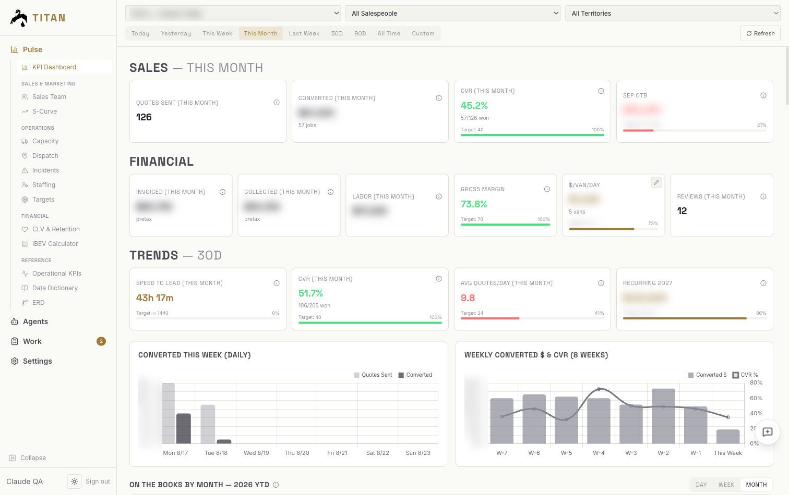
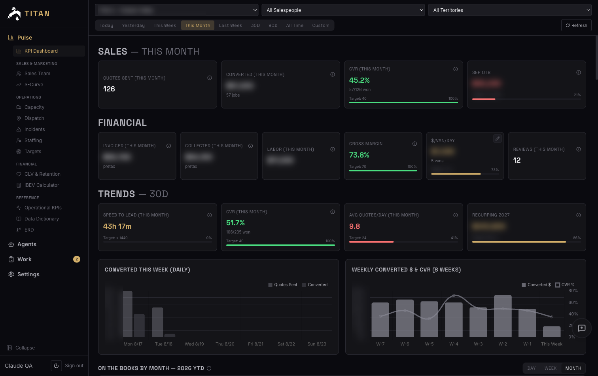
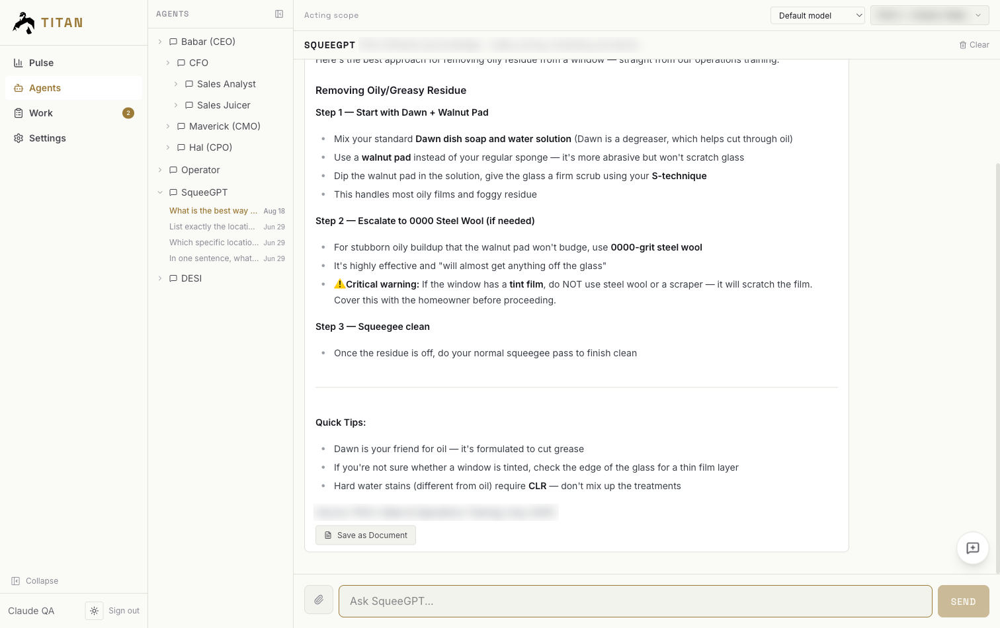
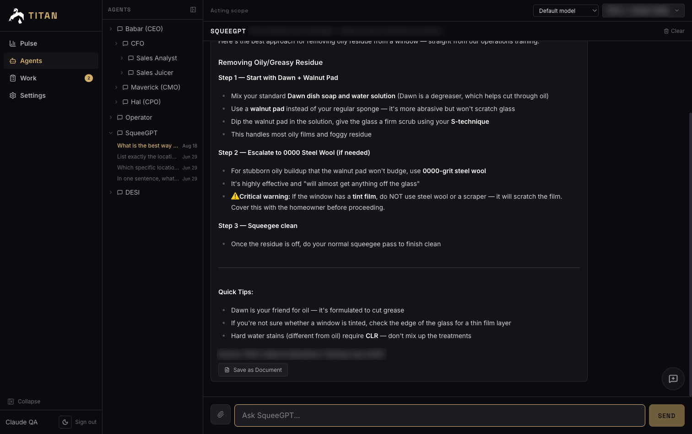
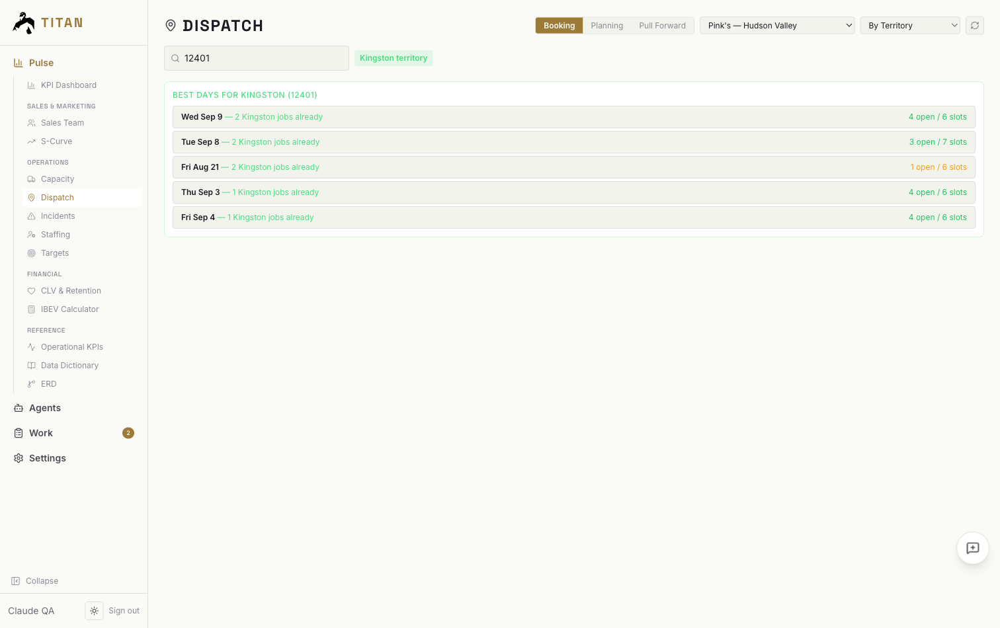
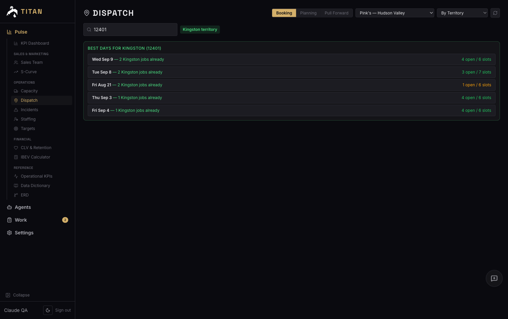

Our franchise locations ran on what a few people knew and five systems that didn't talk to each other. I turned that into a system that runs the day, measures itself, and leaves people the decisions that need them.
Live Titan screens, with names and dollar figures blurred. Can't see it? Watch on Loom.
Home services looks simple from the outside. A crew shows up, does the job, the customer pays. Inside, the day turns on a handful of judgment calls: which job to quote, where to send a crew, who to hire, which invoice to chase.
In the home-services franchise locations I co-owned, those calls lived in a few people's heads. The data to check them was spread across five systems. Finding out what happened yesterday meant someone pulling it together by hand.
It showed up in one number. Field labor was 50% of revenue. We knew we were overspending on labor per job, we just couldn't see where fast enough to do anything about it.
I built Titan, an AI operating system for multi-location service businesses, and ran our own locations on it first. It handles reporting, quoting, invoicing, collections, recruiting and dispatch.
Every number that runs the day is on one screen: quotes sent, conversion, invoiced, collected, gross margin, dollars per van per day. The same numbers land in an email twice a day so nobody has to go looking. The 6pm email lists every visit from that day and which ones still need invoicing or still need paying. That email is what shortened our cash cycle.
Each view starts from the decision someone has to make, like what to invoice, what to chase, where to send an open crew. When a number would mislead, the system holds it back instead of showing it.


They're built from the franchise's training, our SOPs and call transcripts, and rebuilt nightly. A crew member asks how to handle a job and gets the answer from our own training. GMs use the same tool to pull data from the P&L, bank transactions, the CRM and marketing channels.


Someone texts the hiring line. The agent screens them on the spot and scores them against the three things we actually hire for: friendliness, hustle and quality. The GM gets a candidate and a transcript, and makes the call.
It finds a slot next to another job in the same area so crews drive less, or pulls a future job forward into a slot that just opened.


At 3am it reconciles our data against the source systems and backfills whatever drifted. At 4am it scans for errors and writes up what it found. By 5am the day's plan is waiting. Errors, team feedback and feature requests flow back in and become fixes, so it gets better every week without anyone kicking off a project.
The software was the easy part. Building has gotten cheap. I've run more than 80 coding agents at once, and the limit was never compute or headcount. It was how fast decisions got made.
The hard part was everything around the code. First, trust in the numbers. Data from the field system drifts, and if people see one wrong number they stop trusting all of them. That's why the overnight reconciliation exists, and why Pulse would rather hide a number than show a misleading one.
Second, adoption. A dashboard nobody acts on changes nothing. What moved behavior was sending people the numbers at 6pm with the specific visits to chase, not asking them to log in and look.
Third, deciding what the system should not decide. The recruiting agent screens and scores, the GM still hires. Drawing that line for each workflow is a business call, not a technical one.
Titan doesn't just report. Its agents make decisions and take actions in a live business every day, so most of the work went into how they're run, checked and kept in bounds.
Orchestration, not prompts. The recruiting agent runs a full screening conversation by text and scores the candidate. Invoicing and collections run as multi-step workflows on a scheduler. On the build side, dozens of agents work in parallel, each in its own copy of the code, with a merge queue deciding what lands.
Tool use and workflow execution. Agents act through connectors I built into the systems the business already runs on: Jobber for jobs and invoices, QuickBooks, the bank, the phone and text system, and email.
Evaluation, before and after. Before a change ships: tests, adversarial AI review (including a reviewer built from 52 of my own review comments), 21 automated checks and a live preview on production-shaped data. After it ships: every night the system reconciles what it recorded against the source systems and writes up every error it finds.
Observability and failure handling. Health checks and a watchdog run around the clock, and the deploy tests itself and rolls back if it breaks. The lesson that cost me the most: "it reported success" isn't success. Every job has to show its effect, not just a green status.
Guardrails. Nothing merges without passing every check, every change can be rolled back, and the reporting would rather hide a number than show a misleading one.
Autonomy vs. control. I decide this per workflow. Reminders and reconciliation run on their own. The recruiting agent screens and scores, but the GM makes the hire. Anything that changes money or a customer relationship in a new way waits for a person.
The method isn't specific to window cleaning or franchises. It's how I'd approach any operation that runs on a few people's judgment.
For us it was labor as a share of revenue. Everything else came after.
What to invoice, who to hire, where to send a crew. That judgment becomes the rules, the training material and the scoring.
Ours ran in our own locations before anyone else saw it. Then widen from there.
Let the system do the repetitive work and check itself every night, so the numbers stay trusted and people only step in where it matters.
If you're trying to do this in your operation, I'm happy to compare notes.
More on how I work at kopczynski.us.